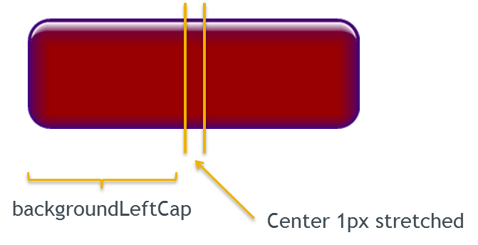
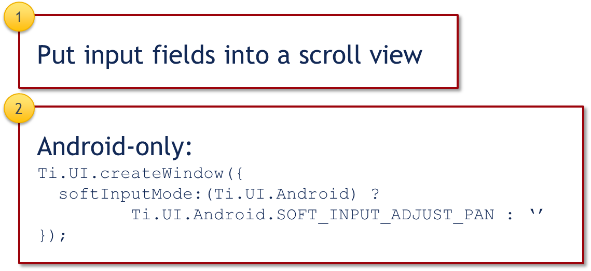
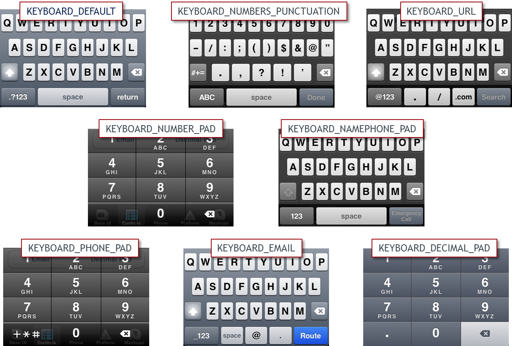
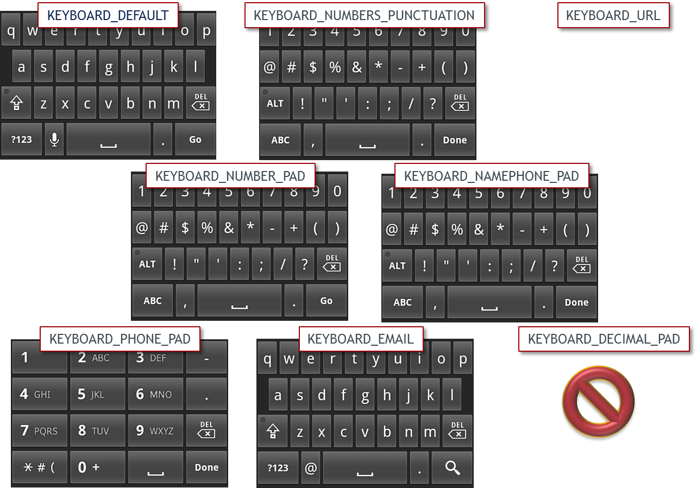
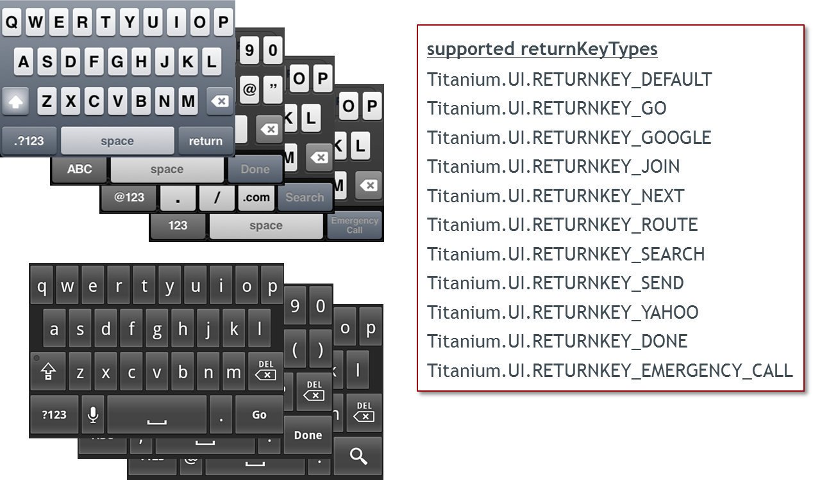
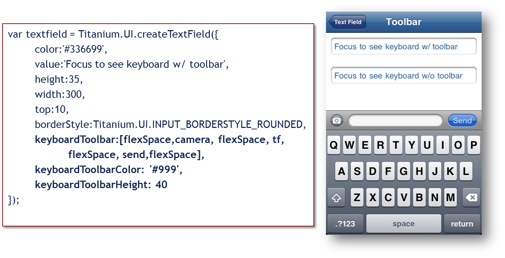

User Input Collection
Advanced Titanium Mobile Development
Module time: 60 mins(30 mins teaching, 30 mins for lab) Data entry in a mobile application is much different than sitting at a keyboard with a desktop computer.† In this module, developers will learn how to collect data from users in a streamlined way.
Agenda
- Skin and style native components
- Handle keyboard and layout issues
- Keyboard customization
- Using Web Views and HTML forms for input collection
Styling Input Components
Sizing input elements
Positioning input elements
hintText
clearOnEdit
Autocorrection and autocapitalization
You can set all the usual width and height values
Keep in mind that text sizes differ across platforms, so size text accordingly
Position with top, left, right, bottom as usual
Hint text shows in empty text fields and text areas, removed when user focuses on the field
Clear on edit removes contents on focus
Turn off autocorrection and autocapitalization by setting to false in field's properties
Keep in mind that text sizes differ across platforms, so size text accordingly
Position with top, left, right, bottom as usual
Hint text shows in empty text fields and text areas, removed when user focuses on the field
Clear on edit removes contents on focus
Turn off autocorrection and autocapitalization by setting to false in field's properties
Styling Input Components, continued
Background colors and gradients
Background graphics
backgroundLeftCap, backgroundTopCap

Set normal, selected, and disabled background colors
Gradients on iOS only
Set normal, selected, and disabled background graphics on most fields
backgroundLeftCap / top cap define an area that won't be stretched
specifies a size in pixels that is the left/right or top/bottom non-stretched area
middle is stretched to fill size of element
background right cap is calculated as width — left cap — center 1px
Gradients on iOS only
Set normal, selected, and disabled background graphics on most fields
backgroundLeftCap / top cap define an area that won't be stretched
specifies a size in pixels that is the left/right or top/bottom non-stretched area
middle is stretched to fill size of element
background right cap is calculated as width — left cap — center 1px
Soft Keyboard and Layout Issues
Hiding the keyboard - blur()
Suppressing the return key
Preventing the keyboard from covering an input

Hide keyboard with input.blur() or show with input.focus()
There's a native Android-only way to hide the keyboard programmatically, see the Kitchen Sink
No way to tell if the keyboard is showing — native OS limitation
Suppressing return — to get new lines in textarea
Add suppressReturn:false to field
Prevent keyboard covering input:
There's a native Android-only way to hide the keyboard programmatically, see the Kitchen Sink
No way to tell if the keyboard is showing — native OS limitation
Suppressing return — to get new lines in textarea
Add suppressReturn:false to field
Prevent keyboard covering input:
- Put input fields into a scroll view
- Android only: use the SOFT_INPUT_ADJUST_PAN constant
Keyboard Customization
Keyboard Type
Set with textfield.keyboardType
Assigning the Return key
Set with textfield.returnKeyType
Keyboard Toolbars
Agenda type slide
Details on upcoming slides
Details on upcoming slides
Keyboard Types - iOS

Keyboard types
Set on text field or text area with keyboardType = Ti.UI.type_name
Set on text field or text area with keyboardType = Ti.UI.type_name
Keyboard Types - Android

Differences are subtle
Numbers_Punctuation and Namephone_Pad are the same
Decimal_Pad not supported
Carrier themes will likely change the appearance of these
Numbers_Punctuation and Namephone_Pad are the same
Decimal_Pad not supported
Carrier themes will likely change the appearance of these
Return Key Options

field.returnKeyType = Ti.UI.RETURNKEY_type
Return key options
Changes label and user expectation
When button is tapped, the return event of the input field is fired
Hint: you could capture return event and move focus to next field in a long form
Return key options
Changes label and user expectation
When button is tapped, the return event of the input field is fired
Hint: you could capture return event and move focus to next field in a long form
Keyboard Toolbars
iOS only feature

Define buttons separately prior
Assign object references to keyboardToolbar property
Add event listeners to those individual buttons
Assign object references to keyboardToolbar property
Add event listeners to those individual buttons
Using Web Views and HTML Forms
HTML is built for forms
Great automatic support for scrolling and 'tabbing' between fields
HTML 5 forms:
- Keyboard types set with <input type=type>
- Controlling the 'viewport'
- Form validation support
HTML 5 includes many form-related additions
Keyboard types
Control size of page via the meta tag
HTML 5 form validation not fully supported across platforms
Keyboard types
Control size of page via the meta tag
HTML 5 form validation not fully supported across platforms
Q&A
Lab Goals
Use an HTML form and a WebView for data entry
Set appropriate keyboard types for each field
Transmit collected data back to native land so data can be saved to a database
Demo and wiki URL
In this lab, we'll use a web view to create a user-friendly input form.
Demo: form is built with HTML
Demo: form is built with HTML
- Fields auto-scroll to remain visible
- Next/previous buttons